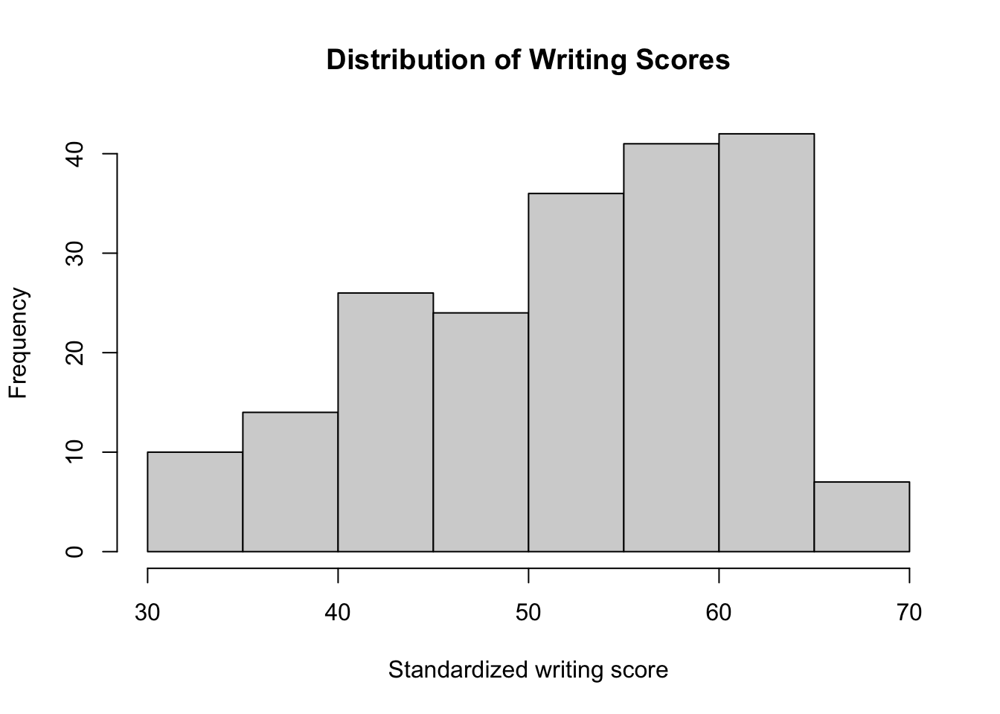
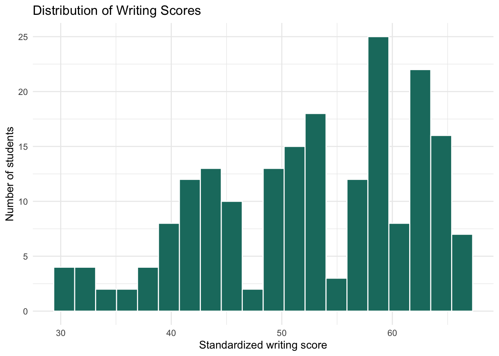
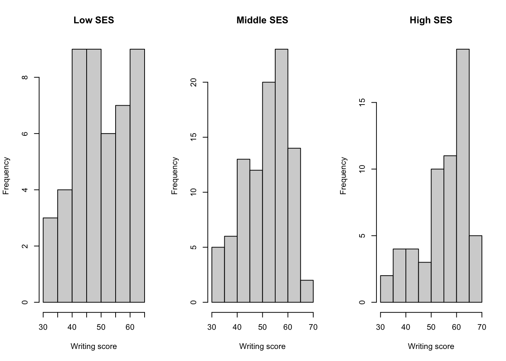
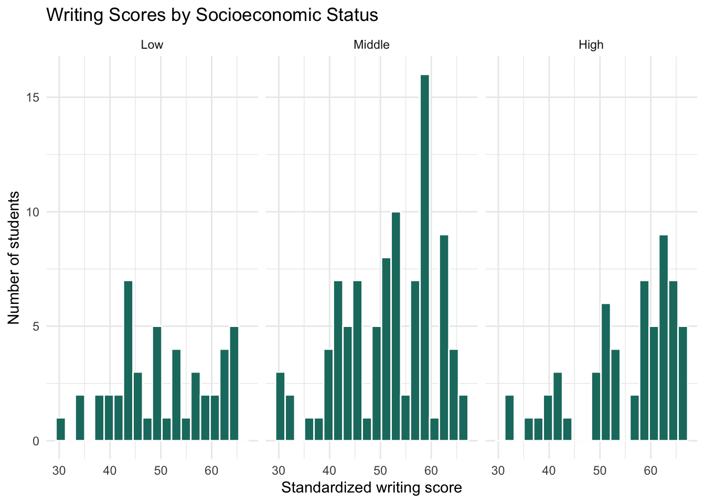
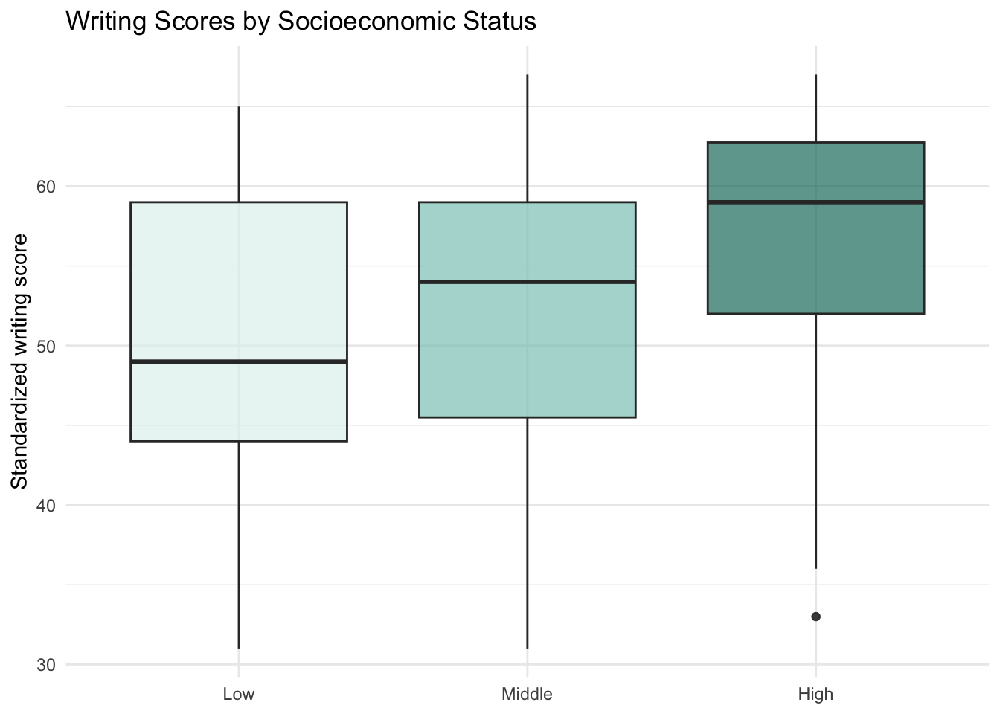

install.packages(c("tidyverse", "haven", "psych"))1 Getting Started with R
Data for this chapter: hsb2.dta
Data file needed
Copy hsb2.dta into this project folder before rendering. This is the same dataset you will use for the Module 1 content review.
This chapter assumes you have R and RStudio installed but not much beyond that. If you have used R before, you may want to skim to the section on categorical variables, which is where the first real trap lives.
The data are a random sample of 200 tenth graders from the High School and Beyond survey, collected in 1980. The full codebook is at http://www.philender.com/courses/intro/hsbcode.html.
1.1 Packages
R by itself is fairly minimal. Almost everything we do relies on packages, which are collections of functions other people have written. You install a package once, and then load it in every session where you want to use it.
A habit worth forming immediately: put all of your library() calls at the top of your document, not scattered through it. When you render a Quarto document, R runs it top to bottom in a fresh session, and a package loaded halfway down cannot help the code above it.
1.2 Reading data in
Which function you use depends on the file format. read_dta(), from the haven package, reads Stata files, which is what most of the course datasets are distributed as. read_csv() handles comma-separated files.
hsb2 <- read_dta("hsb2.dta")Use a plain filename, not a full path like C:/Users/yourname/Downloads/hsb2.dta. Keeping the data file in the same folder as your document is what allows your code to run on someone else’s computer, which is the whole point of a reproducible analysis.
1.3 First look
glimpse() gives you the shape of a dataset: how many rows, how many columns, what type each column is, and the first few values.
glimpse(hsb2)Rows: 200
Columns: 11
$ id <dbl> 70, 121, 86, 141, 172, 113, 50, 11, 84, 48, 75, 60, 95, 104, 3…
$ female <dbl+lbl> 0, 1, 0, 0, 0, 0, 0, 0, 0, 0, 0, 0, 0, 0, 0, 0, 0, 0, 0, 0…
$ race <dbl+lbl> 4, 4, 4, 4, 4, 4, 3, 1, 4, 3, 4, 4, 4, 4, 3, 4, 4, 4, 4, 4…
$ ses <dbl+lbl> 1, 2, 3, 3, 2, 2, 2, 2, 2, 2, 2, 2, 3, 3, 1, 1, 3, 2, 3, 2…
$ schtyp <dbl+lbl> 1, 1, 1, 1, 1, 1, 1, 1, 1, 1, 1, 1, 1, 1, 1, 1, 1, 2, 1, 1…
$ prog <dbl+lbl> 1, 3, 1, 3, 2, 2, 1, 2, 1, 2, 3, 2, 2, 2, 2, 1, 2, 1, 2, 1…
$ read <dbl> 57, 68, 44, 63, 47, 44, 50, 34, 63, 57, 60, 57, 73, 54, 45, 42…
$ write <dbl> 52, 59, 33, 44, 52, 52, 59, 46, 57, 55, 46, 65, 60, 63, 57, 49…
$ math <dbl> 41, 53, 54, 47, 57, 51, 42, 45, 54, 52, 51, 51, 71, 57, 50, 43…
$ science <dbl> 47, 63, 58, 53, 53, 63, 53, 39, 58, 50, 53, 63, 61, 55, 31, 50…
$ socst <dbl> 57, 61, 31, 56, 61, 61, 61, 36, 51, 51, 61, 61, 71, 46, 56, 56…You should see 200 observations and 11 variables: an ID, four demographic variables (female, race, ses, schtyp), the program type (prog), and five standardized test scores (read, write, math, science, socst).
Compare this against the codebook. Doing so is not busywork. It is how you catch a file that was saved wrong, a variable that got dropped in transit, or values that were coded differently than you were told.
describe() from the psych package goes further, giving you means, standard deviations, ranges, skew, and kurtosis for every variable at once.
describe(hsb2) vars n mean sd median trimmed mad min max range skew kurtosis
id 1 200 100.50 57.88 100.5 100.50 74.13 1 200 199 0.00 -1.22
female 2 200 0.54 0.50 1.0 0.56 0.00 0 1 1 -0.18 -1.98
race 3 200 3.43 1.04 4.0 3.66 0.00 1 4 3 -1.56 0.85
ses 4 200 2.06 0.72 2.0 2.07 1.48 1 3 2 -0.08 -1.10
schtyp 5 200 1.16 0.37 1.0 1.07 0.00 1 2 1 1.84 1.40
prog 6 200 2.02 0.69 2.0 2.03 0.00 1 3 2 -0.03 -0.91
read 7 200 52.23 10.25 50.0 52.03 10.38 28 76 48 0.19 -0.66
write 8 200 52.77 9.48 54.0 53.36 11.86 31 67 36 -0.47 -0.78
math 9 200 52.64 9.37 52.0 52.23 10.38 33 75 42 0.28 -0.69
science 10 200 51.85 9.90 53.0 52.03 11.86 26 74 48 -0.19 -0.60
socst 11 200 52.41 10.74 52.0 52.99 13.34 26 71 45 -0.38 -0.57
se
id 4.09
female 0.04
race 0.07
ses 0.05
schtyp 0.03
prog 0.05
read 0.72
write 0.67
math 0.66
science 0.70
socst 0.76This output is also useful for your own records. You can paste it into a document and you have a rough codebook to share with collaborators.
1.4 The first real trap: categorical variables stored as numbers
Look carefully at prog in the output above. describe() happily reports a mean for it, something in the neighborhood of 2. That number is meaningless.
prog is not a quantity. It is a label: 1 for general, 2 for academic, 3 for vocational. The mean of a label tells you nothing, because the distance from general to academic is not a real distance, and “2” is not twice “1” in any sense that matters.
The right descriptive statistic for a variable like this is a count:
table(hsb2$prog)
1 2 3
45 105 50 # As proportions
prop.table(table(hsb2$prog))
1 2 3
0.225 0.525 0.250 You can check how a variable is stored, and see any labels that came along with the Stata file, using str():
str(hsb2$prog) dbl+lbl [1:200] 1, 3, 1, 3, 2, 2, 1, 2, 1, 2, 3, 2, 2, 2, 2, 1, 2, 1, 2, 1...
@ label : chr "type of program"
@ format.stata: chr "%9.0g"
@ labels : Named num [1:3] 1 2 3
..- attr(*, "names")= chr [1:3] "general" "academic" "vocation"This matters enormously later. If you leave a multi-category variable like prog or race coded 1, 2, 3 and drop it into a regression, R will treat it as continuous and estimate a single slope, as though moving from general to academic has the same meaning as moving from academic to vocational. The model will run. The results will be wrong, and no error message will tell you.
The fix is to convert such variables into factors, with labels attached:
hsb2 <- hsb2 |>
mutate(
prog_f = factor(prog, levels = c(1, 2, 3),
labels = c("General", "Academic", "Vocational")),
ses_f = factor(ses, levels = c(1, 2, 3),
labels = c("Low", "Middle", "High")),
female_f = factor(female, levels = c(0, 1),
labels = c("Male", "Female")),
schtyp_f = factor(schtyp, levels = c(1, 2),
labels = c("Public", "Private"))
)
table(hsb2$prog_f)
General Academic Vocational
45 105 50 table(hsb2$ses_f)
Low Middle High
47 95 58
A shortcut for Stata files
Stata files often carry value labels with them. When they do, haven::as_factor() converts a variable to a factor using those labels, saving you from typing them out:
Always check the result with table(). If the labels did not come through, fall back to specifying them yourself as above.
1.5 The pipe
You will see |> throughout this book. It is R’s pipe operator, and it takes whatever is on the left and passes it as the first argument to whatever is on the right. These two lines do the same thing:
The pipe becomes worth using when operations chain together. Instead of nesting functions inside one another and reading from the inside out, you read left to right in the order the steps happen.
hsb2 |>
group_by(ses_f) |>
summarize(
n = n(),
mean_write = mean(write, na.rm = TRUE),
sd_write = sd(write, na.rm = TRUE)
)# A tibble: 3 × 4
ses_f n mean_write sd_write
<fct> <int> <dbl> <dbl>
1 Low 47 50.6 9.49
2 Middle 95 51.9 9.11
3 High 58 55.9 9.44You may also see %>% in older code, including some of the course handouts. It is an earlier version of the same idea from the magrittr package, and for our purposes the two behave identically.
1.6 Graphics
Base R’s hist() is fine for a quick look at one variable:
hist(hsb2$write,
main = "Distribution of Writing Scores",
xlab = "Standardized writing score")
But ggplot2, part of the tidyverse, is what we will use for anything that needs to be readable by someone else. The logic takes a moment to click. You specify a dataset, then a mapping from variables to visual properties inside aes(), then layers of geometry.
ggplot(hsb2, aes(x = write)) +
geom_histogram(bins = 20, fill = "#1a7a6e", color = "white") +
labs(
title = "Distribution of Writing Scores",
x = "Standardized writing score",
y = "Number of students"
) +
theme_minimal()
1.6.1 Comparing groups, and why the axis scale matters
Suppose you want to compare writing scores across the three SES groups. One approach is to split the data into three pieces and plot each one:
low <- hsb2 |> filter(ses == 1)
middle <- hsb2 |> filter(ses == 2)
high <- hsb2 |> filter(ses == 3)
par(mfrow = c(1, 3))
hist(low$write, main = "Low SES", xlab = "Writing score")
hist(middle$write, main = "Middle SES", xlab = "Writing score")
hist(high$write, main = "High SES", xlab = "Writing score")
par(mfrow = c(1, 1))
Look at the horizontal and vertical axes across those three panels. They are not the same, because each plot scaled itself to its own data. Any comparison you make by eye is distorted, and differences can look larger or smaller than they are purely as an artifact of the scaling.
Faceting solves this by drawing one plot split into panels, with shared axes:
ggplot(hsb2, aes(x = write)) +
geom_histogram(bins = 20, fill = "#1a7a6e", color = "white") +
facet_wrap(~ses_f) +
labs(
title = "Writing Scores by Socioeconomic Status",
x = "Standardized writing score",
y = "Number of students"
) +
theme_minimal()
With only 200 students spread across three groups, histograms are fairly lumpy. Boxplots or density curves often compare distributions more clearly at this sample size:
ggplot(hsb2, aes(x = ses_f, y = write, fill = ses_f)) +
geom_boxplot(alpha = 0.7) +
scale_fill_manual(values = c("#e0f2ef", "#8cc9c0", "#1a7a6e")) +
labs(
title = "Writing Scores by Socioeconomic Status",
x = NULL, y = "Standardized writing score"
) +
theme_minimal() +
theme(legend.position = "none")
Notice how much the three groups overlap. There is a difference in the averages, and there is also a great deal of variation within each group. Both facts are true at once, and keeping them both in view is a habit worth building now. Group differences almost never mean that group membership determines an individual outcome.
1.7 Where to go when something breaks
Error messages in R are often unhelpful at first and become readable with practice. A few of the most common:
could not find function "..." almost always means a package is not loaded. Check your library() calls.
object '...' not found means you are referring to something that does not exist in your current session, often because of a typo or because you created it in a chunk that has not been run.
undefined columns selected usually means a variable name is misspelled or capitalized differently than you think. R is case sensitive, and Write is not write.
When you are stuck, ?function_name opens the help page for any function, and the examples at the bottom of those pages are often more useful than the descriptions at the top.